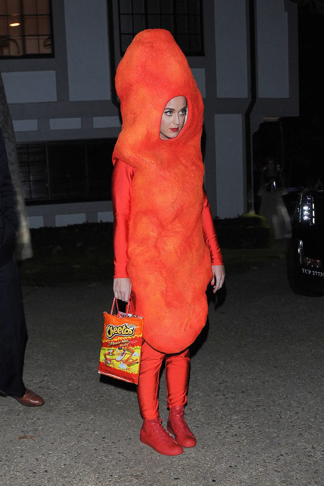
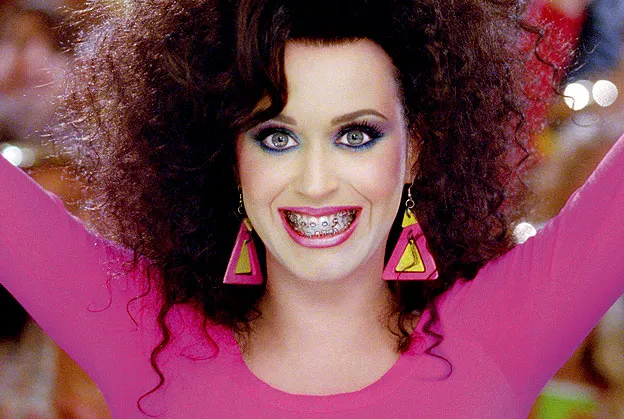

Katy Perry real name (Katheryn Elizabeth Hudson) is an American singer, songwriter, and television personality known for her powerful vocals and catchy pop hits. Since her breakthrough single "I Kissed a Girl" in 2008, she has released multiple song hit albums, establishing herself as one of the best pop artists. Known for her vibrant costume and personality Katy has earned critical acclaim and a large, dedicated fan base. Her influence extends beyond music.
Katy Perry is absolutely not afraid to dress up as cheeto she has dominated the music world with numerous chart-topping hits, iconic music videos, and live performances. inspiring not just me, but millions around the world.
To learn more about Katy Perry, check out these resources: